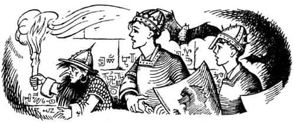
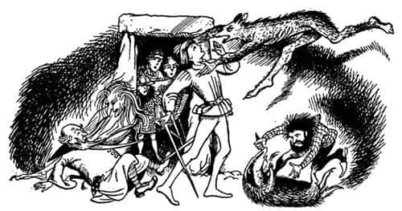

Büyücülük ve Ani İntikam
Bu arada Yaygaracı ve iki oğlan kümbetin içine giden karanlık, küçük taş kemerli yola ulaşmışlardı. İki nöbetçi porsuk (Edmund yalnızca yanaklarındaki beyazlıkları görebiliyordu) dişlerini göstererek ayağa sıçradı ve hırlayan sesleriyle, “Kimdir o gelen?” diye sordular.
“Yaygaracı” dedi Cüce. “Uzak geçmişten Narnia’nın Yüce Kralı’nı getiriyorum.”
Porsuklar oğlanların ellerini kokladılar,
“Nihayet” dediler, “nihayet!”
“Bize bir ışık verin, dostlar” dedi Yaygaracı. Porsuklar kemerli yolda hemen bir meşale buldular. Peter meşaleyi yaktı, Yaygaracı’ya verdi.
“S.K.D. önden gitse iyi olur” dedi. “Buraları bilmiyoruz.”
Yaygaracı meşaleyi aldı ve karanlık tünelde ilerlemeye başladı. Tünel, arada bir yarasaların uçuştuğu, örümcek ağlarıyla kaplı, soğuk, karanlık ve küf kokan bir yerdi. Tren istasyonundaki o sabahtan beri genelde açık havada olan çocuklar, kendilerini tuzağa düşürülmüş ya da hapishaneye götürülüyormuş gibi hissediyordu.

“Baksana Peter” diye fısıldadı Edmund. “Duvarlardaki şu oymalara bak. Ne kadar eski görünüyorlar değil mi? Fakat biz daha yaşlıyız. Biz buradayken bunlar yoktu.”
“Evet” dedi Peter. “İnsanın aklı karışıyor.” Cüce ilerlemeye devam etti. Az sonra sağa, sonra sola döndü. Daha sonra da merdivenlerden aşağı ve tekrar sola. Yolun sonunda önlerine bir ışık çıktı – bir kapı altından sızan ışık. Tünele girdiklerinden bu yana ilk kez ses işittiler; ana odanın kapısına gelmişlerdi. İçeriden öfkeli sesler yükseliyordu. Birisi öylesine yüksek sesle konuşuyordu ki ne Cüce’nin ne de oğlanların yaklaştığı duyulmuştu.
“Bu hiç hoşuma gitmiyor” diye fısıldadı Yaygaracı Peter’e. “Biraz dinleyelim.” Üçü birden çıt çıkarmadan kapının eşiğine sindiler.
“Borunun bu sabah neden çalınmadığını” dedi biri (“Bu, Kral” diye fısıldadı Yaygaracı) “çok iyi biliyorsun. Yaygaracı gitmeden önce Miraz’ın baskın yaptığını, hayatımızı kurtarabilmek için üç saati aşkın bir süre boyunca savaştığımızı unuttun mu? Nefes almaya vakit bulduğum ilk an çaldım boruyu.”
“Nasıl unutabilirim? En ağır saldırıyla karşı karşıya kalan cücelerimin beşte biri hayatını kaybetti.” (“Bu Nikabrik” diye fısıldadı Yaygaracı.)
“Yazıklar olsun” diye kalın bir ses duyuldu (“Mantarsever’in sesi” dedi Yaygaracı). “Hepimiz cüceler kadar savaştık. Ayrıca kimse Kral’dan daha fazla savaşmadı.”
“İstediğin mazereti söyle hiç fark etmez” diye cevapladı Nikabrik. “Bana göre ya geç çalındığı ya da sihir olmadığı için yardım gelmedi. Sen, sen büyük danışman, sen usta sihirbaz, her şeyi bilen sen; hâlâ Aslan’a, Kral Peter’e ve tüm geride kalan şeylere bel bağlamamızı mı istiyorsun?”
“İtiraf etmeliyim ki – bunu görmezden gelemem – harekâtın sonuçları beni çok derin bir hayal kırıklığına uğrattı.” (“Bu Doktor Cornelius olmalı” dedi Yaygaracı.)
“Açık konuşmak gerekirse” dedi Nikabrik, “senin cebinde metelik, oltanda balık yok, yumurtaların bayat, vaatlerin boş. Gölge etme de diğerleri işini yapsın. Ve bunun için—”
“Yardım gelecek” dedi Mantarsever. “Ben Aslan’dan yanayım. Biz hayvanlar gibi sabırlı olun biraz. Yardım gelecek. Şu an kapıda bile olabilir.”
“Pöh!” diye hırladı Nikabrik. “Siz porsuklara kalsa gök başımıza yıkılana ve hepimiz birer tarlakuşu yakalayana kadar bekletirsiniz bizleri. Size bekleyemeyeceğimizi söylüyorum. Erzağımız azaldı; her çarpışmada giderek daha fazla adam kaybediyoruz; yandaşlarımız sıvışıyor.”
“Peki neden?” diye sordu Mantarsever. “Sana nedenini söyleyeyim. Eski kralların, yardım çağrımıza cevap vermediği söylentisi yayılıyor. Gitmeden önce (büyük bir olasılıkla ölüm fermanını imzalayan) Yaygaracı’nın söylediği son sözleri hatırlayın: ‘Eğer boruyu çalmanız gerekiyorsa, neden çaldığınızı ya da ondan ne umduğunuzu ordunun öğrenmesine izin vermeyin’ demişti. Oysa daha o gece cümle âlem her şeyden haberdardı.”
“Benim boşboğaz olduğumu ima etmek yerine, o gri burnunu bir eşekarısı kovanına soksan daha iyi edersin” dedi Nikabrik. “Sözünü geri al, yoksa—”
“Yeter, ikiniz de durun!” dedi Kral Caspian. “Nikabrik’in ima etmeye çalıştığı şeyin ne olduğunu öğrenmek istiyorum. Ne yapmamız gerekiyor? Ama ondan önce toplantımıza getirdiği, kulakları açık, ağızları kapalı o iki yabancının kim olduğunu öğrenmek istiyorum.”
“Onlar benim dostlarım” dedi Nikabrik. “Asıl senin – Porsuk’un ve Yaygaracı’nın dostu olmandan başka burada bulunmanın haklı bir sebebi var mı? Şu kara cüppeli yaşlı bunağın, senin dostun olmasından başka, burada bulunmasının sebebi – dostlarını getirmesine izin verilmeyen sadece ben miyim?”
“Majesteleri, sadık kalacağına yemin ettiğin Kral’dır” dedi Mantarsever sertçe.
“Saray terbiyesi, saray terbiyesi” diye küçümseyerek konuştu Nikabrik. “Bence bu kovukta sıradan insanlar gibi basitçe konuşabiliriz. Biliyorsunuz ki – ve o da biliyor bunu – düştüğü tuzaktan kurtulmasına yardım etmezsek bu Telmarlı çocuk bir hafta sonra hiçbir yerin ve hiç kimsenin kralı olacak.”
“Belki de” dedi Cornelius, “dostların kendi adlarına konuşmak isterler? Sen, oradaki, kimsin ve nesin?”
“Velinimetim, üstadım Doktor” dedi mızıldanan, ince bir ses. “Hoşgörünüze sığınıyorum. Ben sadece zavallı yaşlı bir kadınım ve muhterem cüce hazretlerine dostluğundan dolayı çok minnettarım, evet. Tanrı güzel yüzünü korusun. Majestelerinin sırtı iki kat olan, ocağına atacak odunu kalmayan yaşlı bir kadından korkmasına gerek yok. Eğer ilginizi çekerse, düşmanlarımıza karşı kullanmaktan memnunluk duyacağım basit büyülerden oluşan – kuşkusuz sizinkiler gibi değil – birkaç küçük hünerim var. Çünkü onlardan nefret ediyorum. Ah evet. Kimse benden fazla kin güdemez onlara.”
“Bu çok ilginç ve – ehem – tatmin edici” dedi Doktor Cornelius. “Sanırım şimdi sizin ne olduğunuzu biliyorum, Madam. Nikabrik, belki diğer dostun kendisi hakkında bir şeyler söyleyebilir?”
Peter’in tüylerini diken diken eden donuk, duygusuz bir ses yanıtladı doktoru: “Ben açlığım. Ben susuzluğum. Isırdığım yeri ölünceye kadar bırakmam. Öldükten sonra bile, dişlediğim parçayı düşmanımın bedeninden kesip benimle birlikte gömmeleri gerekir. Yüz yıl oruç tutsam ölmem. Buz üzerinde yüz gece yatsam donmam. Bir nehir dolusu kan içsem doymam. Bana düşmanlarınızı gösterin.”
“Ve sen, bu ikisinin önünde mi planlarını açıklayacaksın?” dedi Caspian.
“Evet” dedi Nikabrik. “Onların yardımıyla başaracağımı umuyorum.” Caspian ve iki arkadaşı alçak sesle konuşmaya başladılar. Çocuklar bir-iki dakika boyunca neler konuştuklarını anlayamadı. Sonra Caspian yüksek sesle, “Pekâlâ Nikabrik” dedi, “Anlat planını.”
Öyle uzun bir sessizlik oldu ki çocuklar, Nikabrik’in hiç konuşmayacağını sandılar. Nikabrik, kendinden emin, sakin bir sesle konuşmaya başladı. “Her şeyden önce” diye mırıldandı, “aramızda, Eski Narnia hakkındaki gerçeği bilen tek bir kişi bile yok. Yaygaracı, efsanelerin hiçbirine inanmıyordu. Bense denemekten yanaydım. Önce boruyu denedik ve bir işe yaramadı. Eğer Yüce Kral Peter, Kraliçe Susan, Kral Edmund ve Kraliçe Lucy gerçekten yaşadılarsa, ya bizi duymadılar ya gelemiyorlar ya onlar bizim düşmanımız—”
“Ya da yoldalar” diye araya girdi Mantarsever.
“Miraz bizi köpeklerine yem yapana kadar bunu söylemeye devam edebilirsin. Dediğim gibi, efsaneler zincirinin bir halkasını denedik ve bize yararı olmadı. Peki. Ancak kılıcın kırılınca hançerini çekersin. Söylenceler, eski kral ve kraliçelerin yanı sıra başka güçlerden de söz ediyor. Onları çağırsak ne olur?”
“Aslan’dan söz ediyorsan” dedi Mantarsever, “onu çağırmak, kralları çağırmakla aynı şey. Krallar onun hizmetkârıydı. Onları göndermiyorsa (ancak ben göndereceğine inanıyorum) kendisi mi gelecek acaba?”
“Haklısın, bence” dedi Nikabrik, “Aslan ve krallar birlikte gelirler. Aslan ya öldü ya da bizim tarafımızda değil. Kendisinden daha güçlü bir şey tarafından engelleniyor da olabilir. Diyelim ki geldi, dost olduğunu nereden bileceğiz? Söylenenlere bakılırsa cücelerle her zaman iyi geçinemiyormuş. Tüm hayvanların dostu da değilmiş; kurtlara sorabilirsiniz. Ayrıca duyduğuma göre Narnia’ya sadece bir kez gelmiş ve uzun süre de kalmamış. Aslan’ı unutabiliriz. Ben başka birini düşünüyordum.”
Kimse cevap vermedi. Oda öylesine sessizdi ki Edmund, Porsuk’un burnunu çekişini, hırıltılı nefes alıp verişini duyabiliyordu.
“Kimi kastediyorsun?” dedi Caspian sonunda.
“Eğer efsaneler doğruysa, Narnia’yı yıllarca ve yıllarca büyüsü altında tutan, Aslan’ınkinden çok daha büyük bir güçten söz ediyorum.”
Üçü birden “Beyaz Cadı!” diye bağırdılar. Çıkan gürültüden Peter üç kişinin yerinden fırladığını tahmin etti.
“Evet” dedi Nikabrik yavaşça ve anlaşılır bir şekilde, “Cadı’dan söz ediyorum. Oturun. Çocuklar gibi bir isim duydunuz diye korkuya kapılmayın hemen. Biz güç istiyoruz; bize destek olacak bir güç istiyoruz. Nedir o güç? Efsaneler, Cadı’nın Aslan’ı yendiğini, bağladığını ve şuradaki ışığın hemen ötesindeki taşın üzerinde öldürdüğünü anlatmıyor mu?”
“Ama Aslan’ın dirildiğini de anlatıyor” dedi Porsuk sertçe.
“Evet, anlatıyor” diye cevapladı Nikabrik, “ancak sonradan neler yaptığı hakkında pek bir şey bilmediğimizden sen de haberdarsın. Gerçekten dirildiyse, efsanelerde adının geçmemesini nasıl açıklıyorsun? Dirilmedi, dolayısıyla anlatılacak bir şey de yok. Bence o tarihten sonraki efsanelerde adının geçmemesinin de nedeni bu.”
“Kralları ve kraliçeleri atadı” dedi Caspian.
“Kısa bir süre önce büyük bir savaş kazanan bir kral, bir aslanın yardımı olmadan da hüküm sürebilir” dedi Nikabrik. Mantarsever’den geldiği anlaşılan vahşi bir hırlama duyuldu.
“Ayrıca şu da var” diye sürdürdü sözlerini, “krallardan ve saltanatlarından geriye ne kaldı ki? Onlar da kayboldular. Ama Cadı çok farklı. Yüz yıl saltanat sürdüğünü söylüyorlar: Yüz yıl boyunca kış. Eğer ilginizi çekerse, işte size güç; işte pratik bir çözüm.”
“Gökler ve yeryüzü aşkına!” dedi Kral. “Bize Cadı’nın en büyük düşmanımız olduğu söylenmemiş midir daima? Miraz’dan on kat daha kötü bir zorba değil miydi o?”
“Belki” dedi Nikabrik soğuk bir sesle. “Siz insanlar için öyleydi, tabii eğer o günlerde yaşayan insanlar vardıysa. Belki bazı hayvanlar için de öyleydi. Bildiğim kadarıyla kunduzları ezmişti; en azından Narnia’da şimdi hiç kunduz yok. Fakat biz cücelerle iyi geçiniyordu. Ben bir cüceyim ve her zaman halkımın yanındayım. Biz Cadı’dan korkmuyoruz.”
“Ama bizimle işbirliği yapıyorsun” dedi Mantarsever.
“Evet, bu işbirliğinin bugüne kadar halkıma büyük yararı dokundu” dedi Nikabrik öfkeyle. “Tehlikeli baskınlara kim gönderiliyor? Cüceler. Yemek sıkıntısı olduğunda kimler az yiyor? Cüceler. Kim?—”
“Yalan! Hepsi yalan!” dedi Porsuk.
“Ve işte bu yüzdendir ki” dedi sesi artık bir çığlığa dönüşen Nikabrik, “halkıma yardım edemezseniz, ben de yardım edebilecek birine giderim.”
“Bir meydan okuma mı bu?” diye sordu Kral.
“O kılıcı kınına geri sok Caspian” dedi Nikabrik. “Toplantıda cinayet ha? Senin oyunun bu mu? Aptallık etme sakın. Senden korktuğumu mu sanıyorsun? Biz de üç kişiyiz siz de.”
“Haydi öyleyse” diye hırladı Mantarsever, ama sözü anında kesilmişti. “Durun, durun, durun” dedi Doktor Cornelius. “Çok aceleci davranıyorsunuz. Bütün efsaneler Cadı’nın öldüğünü söylüyor. Nikabrik Cadı’yı çağırmakla neyi kastediyor?”
Daha önce sadece bir kere konuşan o donuk ve korkunç ses duyuldu: “Ah, öldü mü?”
Sonra mızıldanan titrek bir ses duyuldu: “Ah, Tanrı korusun, sevgili küçük Majesteleri, Beyaz Leydi’nin – biz onu bu isimle çağırırız – öldüğünü düşünmesinler lütfen. Üstat Doktor’un söyledikleri, benim gibi zavallı ve yaşlı bir kadına yapılan bir latife olsa gerek. Tatlı Üstat Doktor, bilge Üstat Doktor, bir cadının öldüğünü kim duymuş ki bugüne kadar? Onu istediğin her zaman geri getirebilirsin.”
“Çağır Cadı’yı” dedi donuk ses. “Hepimiz hazırız. Çemberi çiz, mavi ateşi hazırla.”
Porsuk’un düzenli olarak artan hırlamasına Cornelius’un keskin “Ne?” haykırışı eklendi ve sonra Kral Caspian’ın sesi bir gökgürültüsü gibi yükseldi:
“Bu mu senin planın Nikabrik? Kara büyüyle lanetli bir hayaleti geri çağırmak. Şimdi yoldaşlarının kim olduğunu daha iyi anlıyorum – bir kocakarı ve bir kurtadam!”
Sonraki dakikalarda her şey içinden çıkılmaz bir hal almıştı. Bir hayvanın kükremesi, birbirine çarpan çelik sesleri duyuldu. Oğlanlar ve Yaygaracı içeri daldı. Peter, yarı insan yarı kurt, gri ve sıska korkunç bir yaratığı, kendi yaşındaki bir çocuğun üzerine atlarken gördü. Edmund ise bir porsukla bir cüceyi, kedi köpek dalaşı yapar gibi, yerde yuvarlanırlarken gördü. Yaygaracı kendini, Doktor Cornelius’un boğazını sıkan kocakarıyla yüz yüze buldu. Burnu ve çenesi bir fındık kıracağına benziyordu, kirli, kır saçları yüzüne düşüyordu. Yaygaracı’nın kılıç darbesiyle kellesi yere düştü. Sonra lambalar devrildi, saniyeler dakikaya doğru ilerlerken kılıç, diş, pençe, yumruk ve potin sesleri duyuldu. Sonra sessizlik.

“İyi misin Ed?”
“Sa – sanırım” dedi Edmund soluk soluğa. “O vahşi Nikabrik elimde ve hâlâ canlı.”
“Şişeler ve ağırlıklar!” diye öfkeli bir ses duyuldu. “Üzerimde oturuyorsun. Kalk! Bir fil yavrusu kadar ağırsın.”
“Özür dilerim S.K.D.” dedi Edmund. “Böyle iyi mi?”
“Of! Hayır!” diye böğürdü Yaygaracı. “Potinini ağzıma sokuyorsun. Git başımdan.”
“Kral Caspian buralarda mı?” diye sordu Peter.
Cılız mı cılız bir ses duyuldu, “Buradayım. Beni bir şey ısırdı.”
Bir kibrit sesi duydular. Edmund’du bu. Küçük alev, kirli ve soluk yüzü aydınlatıyordu. Edmund kısa bir süre şaşkınlıkla dolandı, mumu buldu (yağ bittiği için artık kandillerini kullanamıyorlardı) masaya koydu ve yaktı. Alev yükselip ortalık aydınlanınca herkes ayağa kalktı. Altı kişi mum ışığında birbirinin yüzüne bakıyordu.
“Hiç düşmanımız kalmamış gibi görünüyor” dedi Peter. “Şu kocakarı ölmüş.” (Gözlerini çabucak başka yere çevirdi.) “Nikabrik de öyle. Sanırım şu şey de bir kurtadam. Kurtadam görmeyeli o kadar uzun zaman oldu ki. Kurt başı ve insan vücudu. Bu, öldürüldüğü anda insandan kurta dönüşmekte olduğu anlamına geliyor. Ve sen, sanırım, Kral Caspian’sın.”
“Evet” dedi diğer çocuk. “Ama ben seni tanımıyorum.”
“Yüce Kral, Kral Peter” dedi Yaygaracı.
“Hoş geldiniz Majesteleri” dedi Caspian.
“Ve siz Majesteleri de hoş geldiniz” dedi Peter. “Sizin yerinizde gözüm yok, biliyorsunuz, aksine sizi, ait olduğunuz yere kavuşturmaya geldim.”
“Majesteleri” diye bir ses duyuldu Peter’in dirseğinin dibinden. Peter döndü ve kendini Porsuk’la yüz yüze buldu. Öne doğru eğildi, kollarıyla hayvana sarıldı ve tüylü başını öptü. Bu, kızların yapacağı türden bir şey değildi, ne de olsa o Yüce Kral’dı.
“Porsukların en iyisi” dedi. “Tüm bu olanlar boyunca bizden bir an bile kuşku duymadın.”
“Elimde değil, Majesteleri” dedi Mantarsever. “Ben bir hayvanım; biz değişmeyiz. Dahası ben bir porsuğum ve biz her şeye direniriz.”
“Nikabrik’e üzülüyorum” dedi Caspian, “gördüğü ilk andan beri benden nefret etmesine rağmen. Uzun süredir çektiği acılar, beslediği kin yüzünden içten içe çürümüştü. Eğer savaşı kısa sürede kazansaydık, barış zamanında iyi bir cüce olabilirdi. Onu hangimizin öldürdüğünü bilmiyorum, ama öldüğüne memnunum.”
“Yaran kanıyor” dedi Peter.
“Evet, bir ısırık” dedi Caspian. “Şu – şu kurt şey.” Yarayı temizleyip sarmak uzun zaman aldı. Tedavi bittiğinde Yaygaracı, “Şimdi her şeyden önce, bir kahvaltı istiyoruz” dedi.
“Ama burada değil” dedi Peter.
“Hayır” dedi Caspian, omuzlarını silkerek. “Cesetleri kaldırması için birini göndermemiz gerekiyor.”
“Şu yaratıkları bir çukura atsınlar” dedi Peter. “Ancak Cüce’yi halkına teslim edelim ki geleneklerine uygun bir şekilde toprağa verilebilsin.”
Sonunda Aslan’ın Kümbeti’nin diğer karanlık odalarının birinde kahvaltı ettiler. Hoşlandıkları türden bir kahvaltı değildi bu, çünkü Caspian ve Cornelius geyik köftesi, Peter ve Edmund ise yağda yumurtayla birlikte sıcak kahve istiyorlardı. Herkesin payına, (çocukların cebinden çıkan) ufak bir parça soğuk ayı eti, bir topak sert peynir, bir soğan ve bir kupa su düşmüştü. Öyle bir iştahla yediler ki, görenler ziyafet çektiklerini sanırdı.